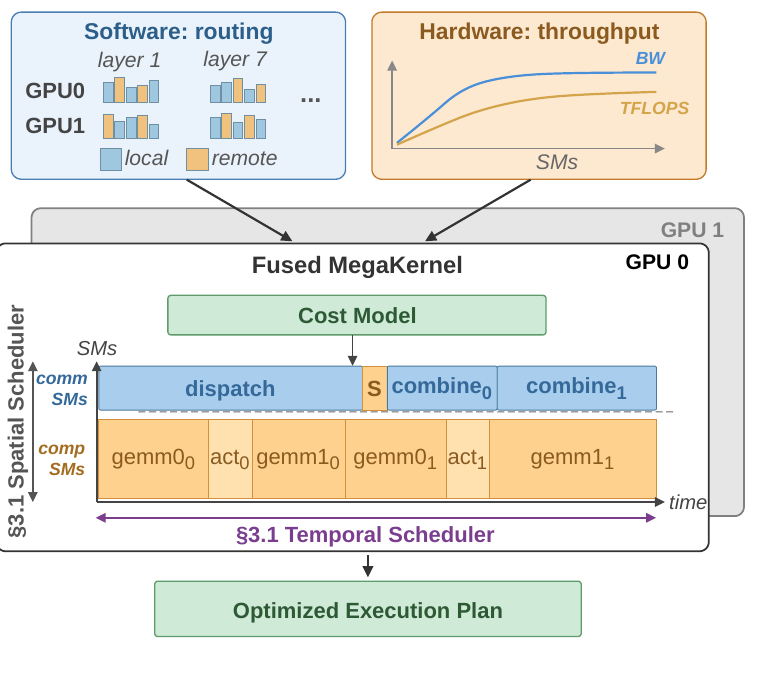
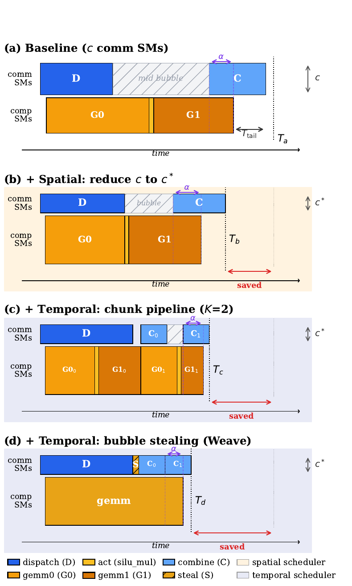
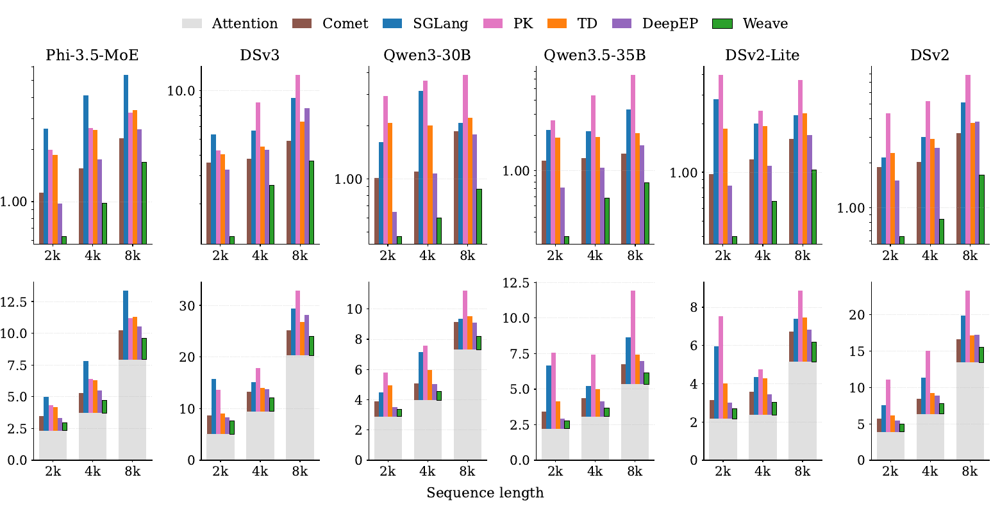
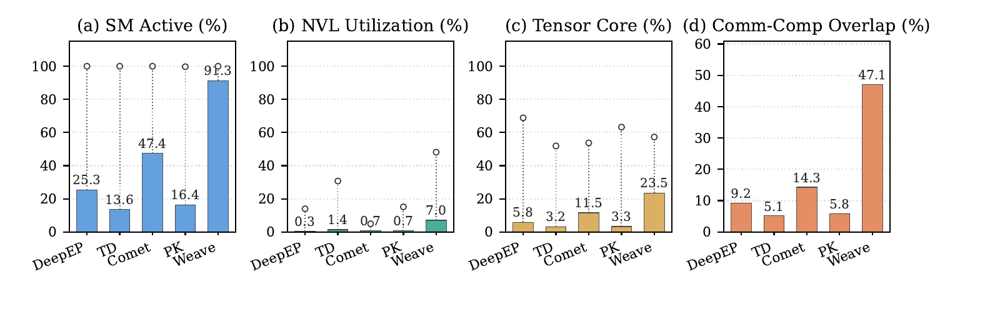
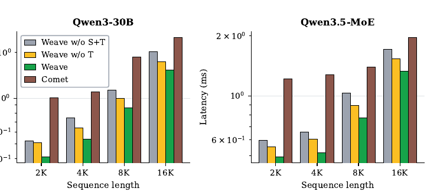

Weave: Fine-Grained Dynamic SM Scheduling in an MoE Megakernel for Compute-Communication Overlap
MoE expert parallelism 的 routing 每層、每張 GPU 都不同，固定的 communication／computation SM 切分因此會反覆選錯比例；即使比例正確，dispatch 與 combine 的相依關係仍會留下 idle bubble。Weave 把五個 MoE 階段收進 persistent megakernel，在 routing 後用極輕量 cost model 聯合選擇 communication SM 數 \(c\) 與 pipeline chunk 數 \(K\)，再以 chunk pipeline 與 bubble stealing 回收時間空洞。實驗事實在單一 4×H100 SXM、六種 MoE 模型上，相對五個基線的幾何平均提升為 MoE layer \(2.89\times\)、端到端 \(1.33\times\)；但目前只驗證 EP=4 的單節點 prefill，尚不能外推到 multi-node、decode 或 production serving。Abstract · PDF p.1
文章目錄
先看懂 MoE 一層裡誰在搬 token、誰在算 GEMM
理解 Weave 不需要先學完整 MoE 訓練，只要掌握三件事：token 如何跨 GPU 找 expert、SM 如何同時承擔搬運與矩陣乘法，以及 persistent megakernel 為何讓 device 端排程成為可能。
一個 MoE layer 是五段有相依關係的資料流
Mixture-of-Experts（MoE）以 gating network 為每個 token 選出少量 top-\(k\) experts；expert parallelism（EP）再把不同 experts 放到不同 GPU。一次 forward 因此依序經過：dispatch 把 activation 送到 expert 所在 GPU，GEMM0 做 up／gate projection，SiLU-mul 做 activation，GEMM1 做 down projection，最後 combine 將多個 expert 輸出加權送回原 GPU。dispatch 與 combine 是跨 GPU communication，其餘三段是本地 computation。§2.1 · PDF p.3 · Fig. 3
SM 切分不是「越多給 communication 越好」
GPU streaming multiprocessor（SM）是此處的工作者單位。若把 \(N\) 個 SM 中的 \(c\) 個指定為 communication workers，其餘 \(N-c\) 個負責 GEMM，增加 \(c\) 會提升搬運頻寬，卻同時減少矩陣計算資源；而且兩條 throughput curve 都會提早飽和。論文所用 H100 有 132 個 SM，所以問題不是要不要 overlap，而是每一層該把多少 SM 放在兩邊。§2.2、§3.1 · PDF pp.3–5 · Fig. 4
persistent megakernel 把排程決策搬到 routing 之後
傳統 operator-by-operator 執行把 dispatch、GEMM 與 combine 分成多個 kernel；persistent megakernel 則讓一個 grid 常駐 GPU，跨越整個 MoE layer 的五個階段。這不只省 launch boundary，更重要的是：routing 完成後，kernel 已能看到當層、當 GPU 的 token 分布，可在真正執行前即時計算角色分工與任務順序。§3、§4 · PDF pp.5、7 · Fig. 7
| 概念 | 直接造成的限制 | Weave 的對應決策 |
|---|---|---|
| routing-dependent EP | 每層、每 GPU 的 remote token 與 expert workload 不同 | routing 後才選 \(c\) |
| dispatch → GEMM → combine 相依 | 即使切分 SM，communication workers 中段仍可能閒置 | 選 \(K\) 做 chunk pipeline，再用 bubble stealing 補洞 |
| persistent megakernel | 需要在微秒級完成決策，不能呼叫昂貴 host scheduler | device-side cost model 與 dynamic tile claiming |
有了這三個元件，接下來要問的不是「communication 能否與 computation 重疊」，而是現有 overlap 為何仍然留下兩種浪費。
固定 SM 比例為何同時浪費頻寬與算力？
現有系統已會 overlap，卻多半把「SM 比例」和「執行時序」當成靜態設定；routing skew 一變，空間上會選錯 worker 比例，時間上又會出現沒工作可做的 mid bubble。
症狀：通信已是 MoE layer 的主要暴露成本
作者主張既有研究回報 dispatch 與 combine 可佔 MoE layer latency 最多 40%；同時 A100→H100→B200 的 BF16 throughput 成長快於 NVLink 單向頻寬，compute-interconnect gap 因而擴大。這個背景說明為什麼只優化 GEMM 不夠，但 40% 是引用的 prior-work 上限，不是 Weave 本文在所有 workload 的直接量測。§1 · PDF pp.1–2 · Fig. 1
空間錯配：同一層的四張 GPU 也不該共用一個 \(c\)
TD 讓全部 SM 依序做 communication 與 computation；DeepEP／ParallelKittens 在 compile time 固定 SM 比例；Comet 雖可依 sequence length 每 iteration 選配置，仍看不到每層 routing。論文在 DSv2、CodeSearchNet、4×H100 的 Layer 1 量到四張 GPU 的最佳 communication SM 數 \(c^{*}\) 落在 12–36，而 DeepEP 固定 \(c=20\)、Comet 使用 \(c=18\)，兩者都沒有命中任何 GPU 的 optimum。由於 layer barrier 受最慢 GPU 決定，在 bottleneck GPU 3 上，DeepEP、Comet、TD 分別比 per-GPU optimum 慢 \(1.33\times\)、\(1.18\times\)、\(1.44\times\)。實驗事實§2.3.1 · PDF p.4 · Fig. 5
時間空洞：切對比例，worker 仍會等相依
GEMM0 必須等 dispatch 送達 token，combine 又必須等 GEMM1 產出結果。因此固定 communication workers 在 layer 中段往往沒有 communication 可做，形成 mid bubble；若單純讓它們切回 computation，又可能造成頻繁 role switching 與工作碎片。論文的 profiling 將這兩個維度分開：既要提高 SM Active，也要提高 NVLink 與 Tensor Core 同時工作的 overlap ratio。§2.3.2 · PDF p.4 · Fig. 6
問題可整理成三項可檢驗需求：R1，配置必須在 routing 後依 layer×GPU 決定；R2，空間比例 \(c\) 與時間切塊 \(K\) 必須聯合最佳化，否則一邊改善會傷害另一邊；R3，決策成本必須遠小於單層 latency，並留在 GPU 上避免新的 launch／host round trip。
關鍵轉折在於 routing 的動態性並非完全不可預測：它一旦完成，就把當層的 communication 與 computation 工作量全部揭露出來。
把 routing 結果當成當層的資源配置表
Weave 的核心直覺是：不要在 routing 之前猜 workload，而要在 routing 之後把 token 分布轉成三個工作量，再用硬體實測 curve 尋找「兩條路徑差不多同時結束」的配置。
先用一個 132-SM 的實例建立心智模型
在論文的 DSv2-Lite、sequence length 8192、4×H100 實驗中，搜尋到 \(c^{*}=40\)、\(K^{*}=4\)，量測 latency 為 1.365 ms。這代表每張 H100 的 132 個 SM 中，40 個先承擔 communication，92 個執行 expert computation；token 又被切成四個 chunks，讓較早完成 GEMM1 的 chunk 先進入 combine。這是用來理解方法的單一量測點，不是所有模型的固定設定。實驗事實§3.3 · PDF p.8 · Fig. 9
routing 結果如何變成 cost model 的輸入
令 \(X_{\text{local}}\) 為落在本地 experts 的本地 token-expert pairs，\(X_{\text{in}}\) 為送入本 GPU experts 的 remote pairs，\(X_{\text{in}}^{\text{uniq}}\) 則是在 top-\(k\) 重複選擇後真正需要跨網路搬一次的 unique remote tokens。若 hidden size 為 \(H\)、expert intermediate size 為 \(I\)，BF16 每 token communication bytes 為 \(B=2H\)，則：
這三個量分別是 expert FFN 的 FLOPs、去重後 dispatch bytes 與逐 expert-output combine bytes；來源為 §3.1，PDF pp.5–6，Eq. 1–3。
把候選 \(c\) 代入實測的 \(\mathrm{TFLOPS}(N-c)\) 與 \(\mathrm{BW}(c)\) curve，就能估算 compute path 與 communication path。再加入 chunk 數 \(K\) 後，combine 的 exposed tail 近似縮小為 \(1/K\)，但 chunk 太細會讓 GEMM efficiency \(\mathrm{eff}_{\text{chunk}}(K)\) 降低：
\(\alpha\) 是經驗校準的 tile-level overlap ratio；scheduler 聯合搜尋 \((c^{*},K^{*})=\arg\min T_{\text{total}}(c,K)\)。來源為 §3.1–3.3，PDF pp.6–8，Eq. 4–10、15–16。
分析這個模型的價值不在於完美預測絕對時間，而在於把每層的動態 routing 轉成低維、可枚舉的配置問題。其風險也同樣清楚：若 profiling curve、\(\alpha\) 或 chunk-efficiency 在新硬體、競爭流量或不同 kernel backend 上漂移，選出的 \(c,K\) 就可能離 optimum 變遠。
cost model 只決定「誰做什麼、切幾塊」；真正的性能還取決於 megakernel 如何依相依關係把這份計畫執行完。
Weave 如何在一個 megakernel 內排完五個階段？
Weave 的執行順序是 routing → workload extraction → 聯合搜尋 → block role assignment → chunked forward → bubble stealing → final combine；整條路徑都留在同一個 persistent megakernel 裡。
{kind=link}

步驟一：prologue 為每張 GPU 產生當層計畫
- 讀 routing descriptors：取得 local／remote token 數、expert 分布與去重後 dispatch volume。
- 查 throughput profiles：以候選 communication SM 數 \(c\) 查 \(\mathrm{BW}(c)\)，以 \(N-c\) 查 GEMM throughput。
- 聯合搜尋 \(c,K\)：最小化預估 layer latency，並由剩餘 bubble 推導每個 communication SM 可偷取的 GEMM tile 數 \(n_{\text{steal}}\)。
- 指定 block role：H100 上 grid size 等於 132；
blockIdx.x < c*的 blocks 是 communication workers，其餘是 computation workers。
論文將 cost model 放在每個 block 的 prologue，讓各 block 獨立讀取少量 routing data；後續 tile assignment 以 global counter 的 atomicAdd 動態領取工作，可容忍不同 SM 執行速度。§4 · PDF pp.7–8
步驟二：空間排程先讓兩條路徑接近平衡
spatial scheduler 不是平均分配 SM，而是在通信頻寬與 GEMM throughput 的飽和曲線上找 \(c^{*}\)。若 compute path 加 exposed tail 較慢，就應把更多 SM 留給 computation；若 dispatch＋combine 較慢，就增加 communication workers，直到額外 SM 的邊際效益不足。這直接回答 R1，但仍未消除 communication workers 在中段等待 GEMM1 的問題。
{kind=link}

步驟三：chunk pipeline 把 combine 拉進 GEMM 中段
Weave 不切 dispatch，而把 GEMM0、activation、GEMM1、combine 依 token 分成 \(K\) chunks。當 chunk 0 的 GEMM1 完成，communication workers 可立刻執行 \(C_0\)，同時 computation workers 繼續 chunk 1；如此把原本集中在尾端的 combine 攤進 computation window。不過 \(K\) 不是越大越好：DSv3、seq=8192 的量測顯示 \(K=8\) 比 \(K=1\) 的 group GEMM throughput 約低 27%，因此必須與 \(c\) 聯合搜尋。實驗事實§3.2.1 · PDF pp.6–8 · Fig. 9a
步驟四：bubble stealing 回收剩餘的 communication SM
dispatch 結束到第一個 chunk combine 開始前仍可能有殘餘空洞。Weave 讓 communication SMs 在這段連續窗口加入 GEMM，而非在多個小空洞中反覆切換角色；可偷的總工作量近似為：
communication 完成前 computation workers 已做掉一部分 GEMM；剩餘工作平均攤給全部 \(N\) 個 SM。來源為 §3.2.2，PDF p.7，Eq. 11–14。
實作還把 dispatch-side token deduplication 融進 megakernel：重複 remote token 只跨 GPU 搬一次，後續 expert 直接從本地 HBM buffer 讀取；最終 combine 則讓全部 \(N\) 個 SM 參與，避免尾端角色閒置。§4 · PDF pp.7–8
這套機制的因果鏈很完整：routing-aware \(c\) 解決空間錯配，\(K\) 與 steal tiles 解決時間空洞；下一步要看實驗是否真的把兩種改善分別量出來。
快多少，快在資源平衡還是排程細節？
實驗最有價值的地方不是只有 speedup，而是依序驗證了三個環節：主結果是否跨模型成立、硬體資源是否真的更重疊、spatial 與 temporal scheduler 是否各自有增益。
先固定比較條件
| 面向 | 設定 | 閱讀時的控制點 |
|---|---|---|
| 硬體 | 單節點 4×NVIDIA H100 80 GB SXM5；每 GPU 132 SM、80 GB HBM3、989 BF16 TFLOPS；NVLink／NVSwitch 每 GPU 單向 450 GB/s；雙路 Xeon 8468、2 TiB host memory | 所有主比較共用同一節點與 BF16 |
| 軟體 | CUDA 12.9.86、driver 575.57.08、NCCL 2.21.5、NVSHMEM 3.6.5、PyTorch 2.6.0+cu124 | baseline 版本有明列，但 warmup、重複次數與 variance 論文未提供 |
| 模型 | DSv3、Phi-3.5-MoE、Qwen3-30B、Qwen3.5-35B、DSv2-Lite、DSv2；BF16、EP=4 | 涵蓋 16–256 routed experts、top-\(k\)=2–8 |
| 工作負載 | ShareGPT routing inputs；batch size 1；input sequence length 2048／4096／8192 | 沒有 continuous batching、decode arrival process 或 SLO 壓力測試 |
| 基線 | SGLang 0.5.9、Triton-Distributed 3.4.0、DeepEP 1.2.1 + DeepGEMM、Comet + Flux 1.1.2、ParallelKittens commit a8f63a9 | 從分離 NCCL/cuBLAS 到 partial fusion、固定 SM partition、per-iteration 配置均有代表 |
主張一：per-layer latency 的改善跨六種 MoE 架構成立
實驗事實18 個 model×sequence-length 組合中，Weave 的 MoE layer latency 全部最低。對各基線的幾何平均 speedup 分別為 DeepEP \(1.95\times\)、Comet \(2.01\times\)、TD \(2.95\times\)、SGLang \(3.63\times\)、PK \(4.76\times\)；跨五基線彙總的 headline 為 \(2.89\times\)。§5.2 · PDF pp.8–9 · Fig. 10 Row 1
{kind=link}

端到端部分也在全部 18 組最低，對 DeepEP、Comet、TD、SGLang、PK 的幾何平均 speedup 依序為 \(1.12\times\)、\(1.13\times\)、\(1.28\times\)、\(1.50\times\)、\(1.70\times\)，彙總 headline 為 \(1.33\times\)。實驗事實但這裡的 E2E latency 是將 SGLang 量得的 pre-MoE／attention block time 與各系統 MoE kernel time相加，不是每個系統在完整 serving stack 中直接 replay 出來；它能回答「MoE kernel 對 block latency 的影響」，不能證明 production request latency 同幅改善。§5.3 · PDF p.9 · Fig. 10 Row 2
主張二：改善確實來自更高的 SM 活性與 comm-comp overlap
在 DSv2-Lite、seq=2048 的完整 MoE forward window，Weave 平均 SM Active 為 91.3%，其他系統最高是 Comet 的 47.4%；comm-comp overlap ratio 為 47.1%，相較 Comet 14.3%、DeepEP 9.2%、PK 5.8%、TD 5.1%。這個 overlap ratio 定義為 NVLink utilization 與 Tensor Core HMMA 同時大於零的時間比例。實驗事實§5.4 · PDF pp.9–10 · Fig. 11
{kind=link}

分析這張圖把論文的因果說法與硬體現象接上：spatial scheduler 避免一側飢餓，chunk pipeline 拉長兩者同時活躍的窗口，bubble stealing 則使原 communication workers 在空檔也能貢獻 GEMM。不過 profiling 只有一個模型與 sequence length，不能代表六個模型的所有性能來源。
主張三：online 搜尋夠便宜，但選擇仍非真正 optimum
論文對 4 models×4 sequence lengths、每組 54 個 \((c,K)\) 配置做 exhaustive comparison。cost-model choice 相對 measured optimum 的平均 latency gap 是 8.2%；在 DSv3 上，cost model overhead 約 0.54 μs，幾乎不隨 sequence length 改變，低於 MoE layer time 的 0.021%。實驗事實§5.5 · PDF p.10 · Fig. 12
因此 R3 的「微秒級、可在線使用」得到直接支持；但 8.2% gap 也提醒讀者，Weave 的速度不是因 cost model 精確重建每個 configuration，而是它即使近似，也比固定或 per-iteration policy 更貼近 routing workload。
主張四：spatial 與 temporal 兩部分都有獨立貢獻
Qwen3-30B 與 Qwen3.5-MoE、2k–16k 共八個點的 ablation 顯示：只加入 spatial scheduler 平均降低 10.1% latency，再加入 temporal scheduler 額外降低 14.1%，合計 22.8%。在 Qwen3-30B、seq=4096 的代表點，兩階段分別降低 14.4% 與再降低 15.7%，合成 27.8%。實驗事實§5.6 · PDF pp.10–11 · Fig. 13
{kind=link}

證據支持 Weave 在指定節點上的機制與 latency；要判斷它是不是可部署的一般解，還必須把實驗沒有覆蓋的尺度與統計問題攤開。
哪些結論仍困在 4×H100 的單節點裡？
這是一篇機制—指標—ablation 對得很整齊的系統論文，但目前最強的結論應限定為：4×H100 NVLink 單節點、EP=4、batch 1 prefill 下，routing-aware megakernel 能顯著降低 MoE layer latency。
最扎實的地方：設計原因可以被逐段反駁
分析Weave 把問題拆成 spatial mismatch 與 temporal bubble，再分別給出 \(c\)、\(K\) 與 stealing；Figure 11 用硬體 counter 觀察 overlap，Figure 13 又把兩個 scheduler 拆開。這比只報端到端 speedup 更強，因為讀者能檢查「為什麼快」是否符合觀察。
尺度邊界：沒有 multi-node，也沒有非 NVLink topology
作者主張作者明確承認目前只在單一 4×H100 NVLink node、EP=4 驗證，larger GPU count 與 multi-node 留作未來工作。跨節點後，communication cost 不再只是 \(\mathrm{BW}(c)\) 的單一平滑 curve；hierarchical links、NIC queue、RDMA congestion、collective synchronization 與 topology 可能讓「增加 communication SM」無法直接換得更多有效頻寬。§7 · PDF p.11
服務邊界：沒有 online arrival、decode 與 tail SLO
主要 workload 是 ShareGPT-derived routing、batch size 1、固定 input sequence lengths。continuous batching、decode 小矩陣、prefill/decode 混部、動態 batch formation、request arrival distribution、TTFT／TPOT／P99 與 goodput 論文未提供。分析因此結果能證明 layer kernel 更快，尚未證明 serving scheduler 在 queueing 與 memory pressure 下仍能把同樣比例轉成 user-visible latency。
「端到端」是組合量測，不是完整系統 replay
Figure 10 Row 2 以 SGLang 的 attention time 加上各 MoE kernel time建構 E2E block latency。這控制了非 MoE 部分，便於隔離 kernel 貢獻；但也排除了 kernel integration、memory allocator、stream interaction、runtime dispatch、batching 與 host overhead 的差異。更嚴格的 deployment claim 應要求每個 baseline 的整體 runtime 直接執行同一 request trace。
量測與可重現性仍有缺口
- 統計方法：warmup、重複次數、error bar、run-to-run coefficient of variation 與 significance test 論文未提供。
- 數值正確性：不同 fused／chunked schedule 的輸出誤差、公差或 bitwise／numerical comparison 論文未提供。
- 能源與成本：功耗、energy per token、profiling overhead 對功率／頻率狀態的影響論文未提供。
- 程式碼：論文只承諾 acceptance 後 open source；目前無法從公開 artifact 重跑完整結果。
cost model 的可移植性是隱含前提
Weave 依賴已校準的 bandwidth／TFLOPS curves、chunk efficiency 與 overlap factor \(\alpha\)。在單租戶、固定軟硬體版本下這很合理；若 GPU clocks、功率限制、MIG、concurrent kernels、link contention 或 kernel backend 改變，curve 可能漂移。平均 8.2% selection gap 顯示 model 已是近似；論文沒有報 worst-case gap 或線上再校準策略。
若 scale-out bottleneck 由 GPU SM 轉到 NIC／switch queue，單純在 GPU 內找 \(c,K\) 可能只能改善局部 pipeline，卻無法縮短全域 straggler；此時 scheduler 需要把路徑 congestion 與 remote expert placement 一併納入狀態。
這些限制不否定 per-layer scheduling；它們指出下一步應把「已知 routing 後排 SM」擴充成「已知整個 fabric 與 serving state 後排多層資源」。
從 per-layer SM 排程還能推到哪些系統問題？
Weave 最可重用的觀念不是某個 H100 常數，而是在動態決策已揭露工作量、真正執行尚未開始的瞬間，做低成本的 runtime resource partition。
一、把 \(c\) 從單一 SM 數推廣成 hierarchical resource vector
推測multi-node EP 可把決策變成 \((c_{\text{GPU}},q_{\text{NIC}},r_{\text{rail}},K)\)：除了 GPU communication SM，還考慮 NIC queue、rail 選擇與 chunk count。cost model 必須區分 intra-node NVLink、inter-node RDMA／RoCE，以及不同 remote expert 的 hop 與 congestion，而不是只用一條 \(\mathrm{BW}(c)\)。
二、讓 serving scheduler 與 megakernel 交換狀態
分析現有 Weave 在 routing 後知道 layer workload，但不知道 queueing SLO、batch composition 或下一個 decode step。若 runtime 把 deadline、batch size、prefill/decode phase 與 cache pressure 傳入 kernel，目標就可從最小化單層 latency 改成最小化 request critical path 或最大化 SLO goodput；反向地，kernel 估計的 layer time 也可幫 scheduler 避免形成 straggler batch。
三、在 AMD Instinct／ROCm 上驗證「曲線形狀」而非照搬參數
推測對 AMD 平台的合理研究問題不是把 \(c=40\) 照搬，而是測量 RCCL／xGMI communication CU 需求、MFMA throughput 隨 active CU 的飽和曲線、wavefront／workgroup role switching 成本，以及 persistent kernel 對 occupancy 與 cooperative launch 的限制。若兩類 curve 仍呈現不同飽和點，routing-aware partition 的方法論可能可移植；若 communication engine 與 compute 資源耦合方式不同，cost model 與 worker abstraction 就需要重寫。
四、用 online calibration 對抗 curve drift
推測可在不進行完整 exhaustive search 的前提下，記錄每層 predicted／measured latency，對 \(\mathrm{BW}(c)\)、\(\mathrm{TFLOPS}(N-c)\)、\(\alpha\) 做保守更新；同時設 guardrail，只有預測信心足夠時才偏離已知安全配置。這能直接測試 8.2% gap 是否來自靜態 calibration，而非模型形式本身。
研究小組可追問的四個問題
- 在 multi-node EP 下，per-GPU local optimum 是否會因 layer barrier 與 network hotspot 而偏離 global optimum？需要哪種協調訊號？
- 若把 batch size、decode phase 與 continuous batching 加入，\(K\) 的最佳值會由 GEMM efficiency 主導，還是由 request-level tail latency 主導？
- Figure 11 的 overlap ratio 是好的 causal proxy；它能否跨硬體預測 latency，還是只在同一 H100 kernel family 內有效？
- 完整 runtime replay 後，Weave 的 \(1.12\times\)–\(1.70\times\) block-level E2E 優勢有多少會被 allocator、scheduling、attention 與 memory traffic 吃掉？
回到本文可確定的範圍：routing-aware scheduling 已被證明能改善一個重要的單節點 MoE kernel domain；跨 fabric、跨 serving layer 的泛化仍是待驗證假說。
術語、論文資訊與關鍵證據索引
論文資訊
| 正式標題 | Weave: Fine-Grained Dynamic SM Scheduling in an MoE Megakernel for Compute-Communication Overlap |
|---|---|
| 作者 | Ziyu Huang、Yangjie Zhou、Chenhao Zhu、Zihan Liu、Jinyu Liu、Shulai Zhang、Xingxun Tang、Hongzhe Yan、Xinhao Luo、Minyi Guo、Xiu Lin、Yinghao Yu、Guodong Yang、Liping Zhang、Shixuan Sun、Jingwen Leng |
| 機構 | Shanghai Jiao Tong University；National University of Singapore；Alibaba Group |
| 版本 | arXiv:2609.21483v1 [cs.DC]，submitted 2026-09-18 |
| 識別碼 | doi:10.48550/arXiv.2609.21483 |
| 分類 | AI Infrastructure / Distributed GPU Kernels |
共 13 頁
分析分類理由：主要貢獻不是新模型、routing algorithm 或 cluster transport，而是跨 GPU MoE layer 的 persistent megakernel 與細粒度 SM scheduling；核心最佳化單位是 distributed GPU kernel，因此歸於 Distributed GPU Kernels。
術語表
- MoE
- Mixture-of-Experts；每個 token 只啟用少數 experts，以稀疏計算換取更大模型容量。
- EP
- Expert Parallelism；把 experts 分散到多張 GPU，因而需要 dispatch 與 combine 跨 GPU 搬運 token activation。
- SM
- Streaming Multiprocessor；本文用來切分 communication 與 computation workers 的 GPU 資源單位。
- persistent megakernel
- 跨越整個 MoE layer 多個 operator、長時間留在 GPU 上的單一 kernel，提供 device-side scheduling domain。
- \(c\)
- 被指定為 communication workers 的 SM 數；其餘 \(N-c\) 個執行 expert computation。
- \(K\)
- GEMM／activation／combine 的 pipeline chunk 數；增大可縮小 exposed tail，但會降低小 chunk GEMM efficiency。
- bubble stealing
- communication workers 在 dispatch 後、combine 前的 idle window 連續領取 GEMM tiles。
- overlap ratio
- profiling window 中 NVLink utilization 與 Tensor Core HMMA 同時大於零的時間比例。
關鍵證據索引
- 中心結論與 headline：Abstract，PDF p.1；4×H100、六模型、MoE layer \(2.89\times\)、E2E \(1.33\times\)。
- 通信動機：§1，PDF pp.1–2，Figure 1；dispatch/combine prior-work 上限與 compute-NVLink scaling gap。
- MoE 五階段：§2.1，PDF p.3，Figure 3；dispatch、GEMM0、activation、GEMM1、combine。
- SM throughput curves：§2.2、§3.1，PDF pp.3–5，Figure 4；communication 與 GEMM 隨 SM 數的飽和關係。
- per-GPU 錯配：§2.3.1，PDF p.4，Figure 5；\(c^{*}=12\)–36 與 bottleneck GPU latency gap。
- 兩維利用率：§2.3.2，PDF p.4，Figure 6；SM Active 與 comm-comp overlap。
- 系統概覽：§3，PDF p.5，Figure 7；routing／hardware inputs、cost model 與 execution plan。
- chunk trade-off：§3.2.1，PDF pp.6–8，Figure 9a；\(K=8\) 的 GEMM throughput 約下降 27%。
- \((c,K)\) 聯合 optimum：§3.3，PDF p.8，Figure 9b；DSv2-Lite 的 \(c^{*}=40,K^{*}=4\)、1.365 ms。
- megakernel 實作：§4，PDF pp.7–8；block roles、dynamic tile claiming、deduplication 與 final combine。
- 評估設定：§5.1，PDF p.8，Table 1；硬體、軟體、模型、workload 與 baselines。
- 主 latency 結果：§5.2–5.3，PDF pp.8–9，Figure 10；18 組 per-layer 與 E2E breakdown。
- 硬體利用率：§5.4，PDF pp.9–10，Figure 11；SM、NVLink、Tensor Core 與 overlap ratio。
- 模型品質與成本：§5.5，PDF p.10，Figure 12；8.2% average gap、0.54 μs overhead。
- 設計拆解：§5.6，PDF pp.10–11，Figure 13；spatial 10.1%、temporal 額外 14.1%。
- 作者明示邊界：§7，PDF p.11；單一 4×H100 NVLink node、EP=4，未驗證 larger scale／multi-node。
Canonical landing page：arXiv:2609.21483。本摘要的「分析」與「推測」是依論文證據形成的獨立判讀，不代表作者已完成相同實驗。